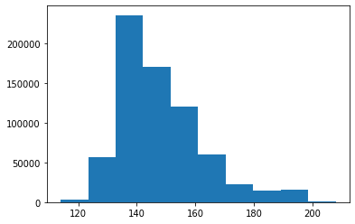
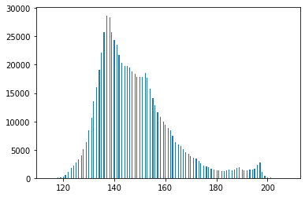
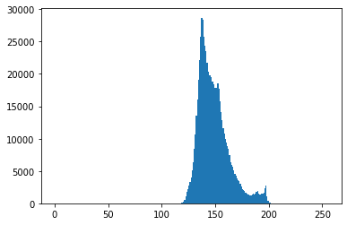
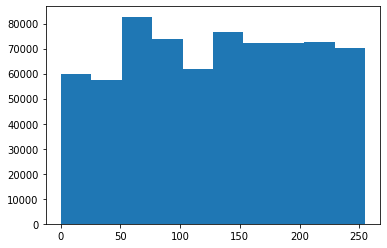

Collecting opencv-python
Downloading opencv_python-4.7.0.68-cp37-abi3-manylinux_2_17_x86_64.manylinux2014_x86_64.whl (61.8 MB)
━━━━━━━━━━━━━━━━━━━━━━━━━━━━━━━━━━━━━━━━ 61.8/61.8 MB 42.7 MB/s eta 0:00:0000:0100:01
Requirement already satisfied: numpy>=1.17.0 in /home/koinup4/anaconda3/envs/py37/lib/python3.7/site-packages (from opencv-python) (1.21.6)
Installing collected packages: opencv-python
Successfully installed opencv-python-4.7.0.68- 히스토그램 이퀄라이제이션(https://en.wikipedia.org/wiki/Histogram_equalization)
이미지 자료 다운로드
!wget https://upload.wikimedia.org/wikipedia/commons/0/08/Unequalized_Hawkes_Bay_NZ.jpg
img = cv2.imread('Unequalized_Hawkes_Bay_NZ.jpg')--2023-02-22 16:32:29-- https://upload.wikimedia.org/wikipedia/commons/0/08/Unequalized_Hawkes_Bay_NZ.jpg
Resolving upload.wikimedia.org (upload.wikimedia.org)... 103.102.166.240, 2001:df2:e500:ed1a::2:b
Connecting to upload.wikimedia.org (upload.wikimedia.org)|103.102.166.240|:443... connected.
HTTP request sent, awaiting response... 200 OK
Length: 110895 (108K) [image/jpeg]
Saving to: ‘Unequalized_Hawkes_Bay_NZ.jpg.1’
Unequalized_Hawkes_ 100%[===================>] 108.30K 519KB/s in 0.2s
2023-02-22 16:32:29 (519 KB/s) - ‘Unequalized_Hawkes_Bay_NZ.jpg.1’ saved [110895/110895]
_files/figure-html/cell-6-output-2.png)
이미지 자료의 이해
비밀1: 이미지는 사실 숫자들의 집합이다.
- 예시1
array([[ 0, 30, 90],
[120, 150, 180],
[210, 240, 255]])- 예시2
array([[ 0, 20, 40],
[ 60, 80, 100],
[120, 140, 160]])- 예시3
array([[ 0, 30, 90, 0, 20, 40],
[120, 150, 180, 60, 80, 100],
[210, 240, 255, 120, 140, 160]])비밀2: 칼라이미지는 red + green + blue 의 조합으로 표현가능 (다른방식도 가능)
- 예시1
- 예시2: R,G,B를 같은 비율로 섞으면 무채색이 된다.
- 예시3
히스토그램 이퀄라이제이션
- 이미지를 rgb로 각각 분리하고 각 색깔들의 히스토그램을 그려보자.
(array([ 3691., 56282., 235628., 170392., 120545., 60511., 22052.,
14354., 15246., 691.]),
array([114. , 123.4, 132.8, 142.2, 151.6, 161. , 170.4, 179.8, 189.2,
198.6, 208. ]),
<BarContainer object of 10 artists>)
(array([1.0000e+00, 0.0000e+00, 1.0000e+00, 0.0000e+00, 0.0000e+00,
1.2000e+01, 0.0000e+00, 0.0000e+00, 1.9000e+01, 0.0000e+00,
4.9000e+01, 0.0000e+00, 0.0000e+00, 9.3000e+01, 0.0000e+00,
0.0000e+00, 2.2000e+02, 0.0000e+00, 4.8800e+02, 0.0000e+00,
0.0000e+00, 1.0610e+03, 0.0000e+00, 0.0000e+00, 1.7470e+03,
0.0000e+00, 0.0000e+00, 2.1600e+03, 0.0000e+00, 2.7180e+03,
0.0000e+00, 0.0000e+00, 3.2590e+03, 0.0000e+00, 0.0000e+00,
4.0390e+03, 0.0000e+00, 5.1080e+03, 0.0000e+00, 0.0000e+00,
6.3950e+03, 0.0000e+00, 0.0000e+00, 8.4630e+03, 0.0000e+00,
0.0000e+00, 1.0610e+04, 0.0000e+00, 1.3530e+04, 0.0000e+00,
0.0000e+00, 1.6115e+04, 0.0000e+00, 0.0000e+00, 1.9125e+04,
0.0000e+00, 2.2186e+04, 0.0000e+00, 0.0000e+00, 2.5696e+04,
0.0000e+00, 0.0000e+00, 2.8701e+04, 0.0000e+00, 0.0000e+00,
2.8324e+04, 0.0000e+00, 2.5759e+04, 0.0000e+00, 0.0000e+00,
2.4369e+04, 0.0000e+00, 0.0000e+00, 2.3578e+04, 0.0000e+00,
2.1775e+04, 0.0000e+00, 0.0000e+00, 2.0385e+04, 0.0000e+00,
0.0000e+00, 1.9839e+04, 0.0000e+00, 0.0000e+00, 1.9781e+04,
0.0000e+00, 1.9445e+04, 0.0000e+00, 0.0000e+00, 1.8856e+04,
0.0000e+00, 0.0000e+00, 1.8457e+04, 0.0000e+00, 1.7906e+04,
0.0000e+00, 0.0000e+00, 1.7917e+04, 0.0000e+00, 0.0000e+00,
1.7806e+04, 0.0000e+00, 0.0000e+00, 1.8485e+04, 0.0000e+00,
1.7680e+04, 0.0000e+00, 0.0000e+00, 1.5799e+04, 0.0000e+00,
0.0000e+00, 1.4163e+04, 0.0000e+00, 1.2812e+04, 0.0000e+00,
0.0000e+00, 1.1576e+04, 0.0000e+00, 0.0000e+00, 1.0751e+04,
0.0000e+00, 0.0000e+00, 9.8990e+03, 0.0000e+00, 9.3800e+03,
0.0000e+00, 0.0000e+00, 8.8630e+03, 0.0000e+00, 0.0000e+00,
8.3990e+03, 0.0000e+00, 7.4040e+03, 0.0000e+00, 0.0000e+00,
6.4030e+03, 0.0000e+00, 0.0000e+00, 5.9110e+03, 0.0000e+00,
0.0000e+00, 5.5910e+03, 0.0000e+00, 5.1500e+03, 0.0000e+00,
0.0000e+00, 4.6100e+03, 0.0000e+00, 0.0000e+00, 4.3200e+03,
0.0000e+00, 3.8600e+03, 0.0000e+00, 0.0000e+00, 3.6160e+03,
0.0000e+00, 0.0000e+00, 3.4300e+03, 0.0000e+00, 0.0000e+00,
3.0630e+03, 0.0000e+00, 2.6490e+03, 0.0000e+00, 0.0000e+00,
2.2130e+03, 0.0000e+00, 0.0000e+00, 2.0460e+03, 0.0000e+00,
1.8590e+03, 0.0000e+00, 0.0000e+00, 1.6920e+03, 0.0000e+00,
0.0000e+00, 1.4840e+03, 0.0000e+00, 0.0000e+00, 1.3620e+03,
0.0000e+00, 1.2900e+03, 0.0000e+00, 0.0000e+00, 1.1530e+03,
0.0000e+00, 0.0000e+00, 1.2320e+03, 0.0000e+00, 1.3000e+03,
0.0000e+00, 0.0000e+00, 1.5200e+03, 0.0000e+00, 0.0000e+00,
1.3840e+03, 0.0000e+00, 0.0000e+00, 1.5270e+03, 0.0000e+00,
1.7350e+03, 0.0000e+00, 0.0000e+00, 1.8510e+03, 0.0000e+00,
0.0000e+00, 1.5320e+03, 0.0000e+00, 1.3590e+03, 0.0000e+00,
0.0000e+00, 1.4140e+03, 0.0000e+00, 0.0000e+00, 1.4830e+03,
0.0000e+00, 0.0000e+00, 1.5410e+03, 0.0000e+00, 1.5950e+03,
0.0000e+00, 0.0000e+00, 2.3690e+03, 0.0000e+00, 0.0000e+00,
2.8100e+03, 0.0000e+00, 1.1430e+03, 0.0000e+00, 0.0000e+00,
4.2000e+02, 0.0000e+00, 0.0000e+00, 1.2800e+02, 0.0000e+00,
0.0000e+00, 5.6000e+01, 0.0000e+00, 4.1000e+01, 0.0000e+00,
0.0000e+00, 1.8000e+01, 0.0000e+00, 0.0000e+00, 1.0000e+01,
0.0000e+00, 1.0000e+01, 0.0000e+00, 0.0000e+00, 6.0000e+00,
0.0000e+00, 0.0000e+00, 1.0000e+00, 0.0000e+00, 1.0000e+00]),
array([114. , 114.36862745, 114.7372549 , 115.10588235,
115.4745098 , 115.84313725, 116.21176471, 116.58039216,
116.94901961, 117.31764706, 117.68627451, 118.05490196,
118.42352941, 118.79215686, 119.16078431, 119.52941176,
119.89803922, 120.26666667, 120.63529412, 121.00392157,
121.37254902, 121.74117647, 122.10980392, 122.47843137,
122.84705882, 123.21568627, 123.58431373, 123.95294118,
124.32156863, 124.69019608, 125.05882353, 125.42745098,
125.79607843, 126.16470588, 126.53333333, 126.90196078,
127.27058824, 127.63921569, 128.00784314, 128.37647059,
128.74509804, 129.11372549, 129.48235294, 129.85098039,
130.21960784, 130.58823529, 130.95686275, 131.3254902 ,
131.69411765, 132.0627451 , 132.43137255, 132.8 ,
133.16862745, 133.5372549 , 133.90588235, 134.2745098 ,
134.64313725, 135.01176471, 135.38039216, 135.74901961,
136.11764706, 136.48627451, 136.85490196, 137.22352941,
137.59215686, 137.96078431, 138.32941176, 138.69803922,
139.06666667, 139.43529412, 139.80392157, 140.17254902,
140.54117647, 140.90980392, 141.27843137, 141.64705882,
142.01568627, 142.38431373, 142.75294118, 143.12156863,
143.49019608, 143.85882353, 144.22745098, 144.59607843,
144.96470588, 145.33333333, 145.70196078, 146.07058824,
146.43921569, 146.80784314, 147.17647059, 147.54509804,
147.91372549, 148.28235294, 148.65098039, 149.01960784,
149.38823529, 149.75686275, 150.1254902 , 150.49411765,
150.8627451 , 151.23137255, 151.6 , 151.96862745,
152.3372549 , 152.70588235, 153.0745098 , 153.44313725,
153.81176471, 154.18039216, 154.54901961, 154.91764706,
155.28627451, 155.65490196, 156.02352941, 156.39215686,
156.76078431, 157.12941176, 157.49803922, 157.86666667,
158.23529412, 158.60392157, 158.97254902, 159.34117647,
159.70980392, 160.07843137, 160.44705882, 160.81568627,
161.18431373, 161.55294118, 161.92156863, 162.29019608,
162.65882353, 163.02745098, 163.39607843, 163.76470588,
164.13333333, 164.50196078, 164.87058824, 165.23921569,
165.60784314, 165.97647059, 166.34509804, 166.71372549,
167.08235294, 167.45098039, 167.81960784, 168.18823529,
168.55686275, 168.9254902 , 169.29411765, 169.6627451 ,
170.03137255, 170.4 , 170.76862745, 171.1372549 ,
171.50588235, 171.8745098 , 172.24313725, 172.61176471,
172.98039216, 173.34901961, 173.71764706, 174.08627451,
174.45490196, 174.82352941, 175.19215686, 175.56078431,
175.92941176, 176.29803922, 176.66666667, 177.03529412,
177.40392157, 177.77254902, 178.14117647, 178.50980392,
178.87843137, 179.24705882, 179.61568627, 179.98431373,
180.35294118, 180.72156863, 181.09019608, 181.45882353,
181.82745098, 182.19607843, 182.56470588, 182.93333333,
183.30196078, 183.67058824, 184.03921569, 184.40784314,
184.77647059, 185.14509804, 185.51372549, 185.88235294,
186.25098039, 186.61960784, 186.98823529, 187.35686275,
187.7254902 , 188.09411765, 188.4627451 , 188.83137255,
189.2 , 189.56862745, 189.9372549 , 190.30588235,
190.6745098 , 191.04313725, 191.41176471, 191.78039216,
192.14901961, 192.51764706, 192.88627451, 193.25490196,
193.62352941, 193.99215686, 194.36078431, 194.72941176,
195.09803922, 195.46666667, 195.83529412, 196.20392157,
196.57254902, 196.94117647, 197.30980392, 197.67843137,
198.04705882, 198.41568627, 198.78431373, 199.15294118,
199.52156863, 199.89019608, 200.25882353, 200.62745098,
200.99607843, 201.36470588, 201.73333333, 202.10196078,
202.47058824, 202.83921569, 203.20784314, 203.57647059,
203.94509804, 204.31372549, 204.68235294, 205.05098039,
205.41960784, 205.78823529, 206.15686275, 206.5254902 ,
206.89411765, 207.2627451 , 207.63137255, 208. ]),
<BarContainer object of 255 artists>)
- 히스토그램 그림1
_fig = plt.hist(img_red[:,:,0].reshape(-1),bins=255, range=[0,255])
# 위의 숫자 보기 싫으니까 걍 _fig로 받으면 그림만 나온다.
# 빨간색 말고 그린, 블루도 다 같은 모양의 그림이 나옴
- 히스토그램 그림 2
- 120~200 사이에 값이 몰려있음
- 그런데 컴퓨터가 표현가능한 색은 0~244..
- 만약에 120-200까지의 분포된 모양은 그대로 유지하면서 range를 0-255까지 늘린다면?
- 분포의 모양은 대략적으로 유지하면서 값을 퍼트리자
(array([59973., 57426., 82721., 73706., 61999., 76539., 72114., 72030.,
72601., 70283.]),
array([ 0. , 25.5, 51. , 76.5, 102. , 127.5, 153. , 178.5, 204. ,
229.5, 255. ]),
<BarContainer object of 10 artists>)
히스토그램이 평평해졌네?
- red말고 다른채널에도 이와 같은 변환을 정의한다면?
히스토그램 이퀄라이제이션 (흑백버전)
숙제
HE(Histogram Equalization)을 이용하여 아래주소에 저장된 이미지의 명암비를 보존하라
https://raw.githubusercontent.com/guebin/2021DV/master/_notebooks/hw_img.png
!wget https://raw.githubusercontent.com/guebin/2021DV/master/_notebooks/hw_img.png
hw = cv2.imread('hw_img.png')--2023-02-22 17:18:34-- https://raw.githubusercontent.com/guebin/2021DV/master/_notebooks/hw_img.png
Resolving raw.githubusercontent.com (raw.githubusercontent.com)... 185.199.108.133, 185.199.111.133, 185.199.110.133, ...
Connecting to raw.githubusercontent.com (raw.githubusercontent.com)|185.199.108.133|:443... connected.
HTTP request sent, awaiting response... 200 OK
Length: 120618 (118K) [image/png]
Saving to: ‘hw_img.png.2’
hw_img.png.2 100%[===================>] 117.79K --.-KB/s in 0.01s
2023-02-22 17:18:34 (10.4 MB/s) - ‘hw_img.png.2’ saved [120618/120618]
_files/figure-html/cell-50-output-2.png)